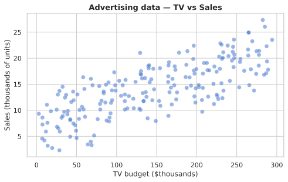
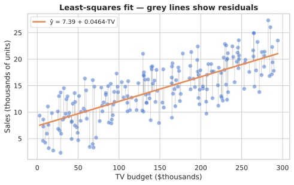
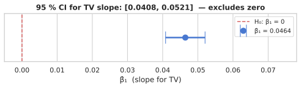
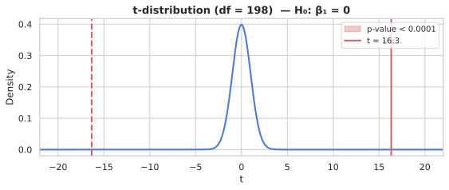
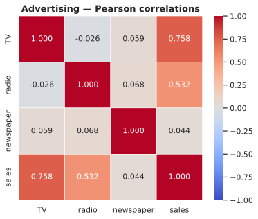
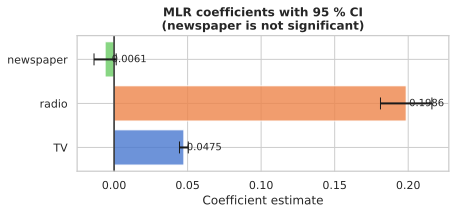
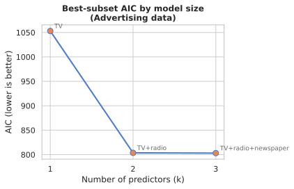
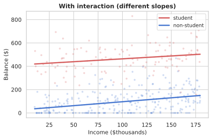
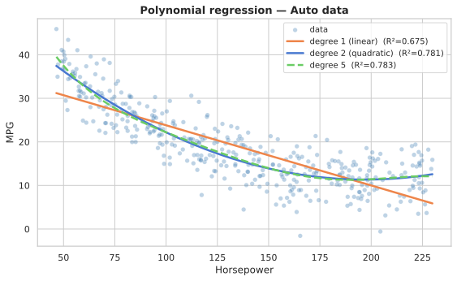

From simple least squares to interactions, qualitative predictors and polynomial fits
Model, RSS, least-squares formulas.
SE, confidence intervals, t-stat, p-value.
RSE, R², correlation.
MLR, interpretation pitfalls, F-statistic.
Forward/backward selection, AIC, BIC, CV.
Dummy variables, baseline, multi-level factors.
Interaction terms, hierarchy principle, polynomial regression.
Linear regression is the foundation: every concept — coefficients, residuals, R², p-values — reappears in every model you'll ever build. Understand it deeply and the rest of the course is revision.
one predictor, one line, one loss

200 markets · TV, radio, newspaper budgets ($thousands) · sales (thousands of units). Positive trend — a straight line looks reasonable.

| Coef. | SE | t | p | |
|---|---|---|---|---|
| Intercept | 7.03 | 0.458 | 15.36 | <.0001 |
| TV | 0.0475 | 0.0027 | 17.67 | <.0001 |
β̂₁ = 0.0475 → each extra $1k on TV ≈ +47.5 units sold.
adv, x, and y used throughout.LinearRegression does internally.LinearRegression wraps the same least-squares math. It needs a 2-D X array (shape n×p). The plot shows the fitted line and residuals vs fitted..summary() call.MedHouseVal on MedInc using statsmodels. Store the fitted model in a variable called m.standard errors, confidence intervals, hypothesis tests
Random error
Can be different from population
just due to random variation
Hypothesis testing
Null — no difference
Alternative — true difference
↗ P value
Probability of getting observed result
or more extreme,
if null hypothesis is true
← statistically significant
Reject the null hypothesis
suggests real effect
→ determine what is considered significant
not statistically significant →
No evidence to reject the null
result may be due to chance
→ reliable, consistent conclusions
Definition: A 95 % CI is a range built from sample data such that, if we repeated the experiment many times, ~95 % of the intervals would contain the true β₁.
⚠️ Not: "95 % chance β₁ is in this interval." The true β₁ is fixed — the randomness is in the interval itself.
🎣 Fishing net analogy
Formula
$$\hat{\beta}_1 \pm t^*_{\alpha/2,\,n-2} \cdot \text{SE}(\hat{\beta}_1)$$
where $\text{SE}(\hat{\beta}_1) = \hat{\sigma}/\sqrt{\sum(x_i-\bar{x})^2}$
and $t^*_{0.025,\,n-2} \approx 1.96$ for large $n$.
Sampling distribution: $\displaystyle\frac{\hat{\beta}_1 - \beta_1}{\text{SE}(\hat{\beta}_1)} \sim t_{n-2}$

Question: Is this coefficient large enough relative to its uncertainty to be considered real?
H₀: βj = 0 (predictor has no effect) vs Hₐ: βj ≠ 0
📻 Noisy room analogy
Formula
$$t = \frac{\hat{\beta}_j}{\text{SE}(\hat{\beta}_j)}, \quad \text{SE}(\hat{\beta}_j) = \hat{\sigma}\sqrt{(X^\top X)^{-1}_{jj}}$$
where $\hat{\sigma}^2 = \text{RSS}/(n-p-1)$
Distribution under H₀:
$t \sim t_{n-p-1}$
Heavy tails (vs Normal) account for estimating σ. As n → ∞ it converges to N(0,1).

Definition: Probability of observing a test statistic at least as extreme as the one we got, if H₀ were true.
⚠️ NOT the probability H₀ is true. NOT the probability the result is "due to chance."
⚖️ Juror analogy
Formula (two-sided)
$$p = 2 \cdot P(T_{n-p-1} > |t_{\text{obs}}|)$$
Thresholds
| p < 0.001 | Very strong evidence |
| 0.001–0.01 | Strong evidence |
| 0.01–0.05 | Moderate (conventional cutoff) |
| > 0.10 | Little to no evidence |
p-value = shaded tail area beyond |t_obs| under the t-distribution.
.bse for standard errors and .conf_int() for CI. The CI for TV excludes zero — strong evidence of a relationship.scipy.stats.t. This demystifies what the summary table is showing.MedHouseVal ~ HouseAge on the California housing dataset using statsmodels. Store the result in m. Then compute the 95% CI and t-statistic for HouseAge manually using scipy.Use when: your variables are categorical (counts / frequencies).
H₀: the two variables are independent | Hₐ: they are associated.
🎲 Loaded die analogy
vs t-test: t is for continuous outcomes; χ² is for categorical counts. χ² is always right-skewed and one-sided.
Formula
$$\chi^2 = \sum_{i,j} \frac{(O_{ij} - E_{ij})^2}{E_{ij}}$$
Expected cell count: $E_{ij} = \dfrac{(\text{row}_i \text{ total}) \times (\text{col}_j \text{ total})}{n}$
Distribution under H₀:
$\chi^2 \sim \chi^2_k$ where $k = (r-1)(c-1)$
Right-skewed, non-negative. Only the right tail counts (large χ² → evidence against H₀).
scipy.stats.chi2_contingency takes a contingency table and returns χ², p-value, degrees of freedom, and expected counts.RSE and R²
TSS measures how much Y varies before we fit any model — it is the baseline variance:
$$\text{TSS} = \sum_{i=1}^{n}(y_i - \bar{y})^2$$
Each squared deviation asks: how far is this observation from the mean? Sum them up → total spread in Y.
Three sums that tell the whole story:
| Name | Formula | Meaning |
|---|---|---|
| TSS | Σ(yᵢ−ȳ)² | Total variance in Y |
| RSS | Σ(yᵢ−ŷᵢ)² | Variance left unexplained |
| ESS | TSS − RSS | Variance explained by model |
RSE = $\sqrt{\text{RSS}/(n-p-1)}$
Dividing by n − p − 1 (not n) makes RSE an unbiased estimator of the true σ.
Degrees of freedom intuition
If you divided by n instead, RSS would systematically undercount the true variance — you'd be overconfident about your fit.
Concrete example (Advertising TV, n=200, p=1):
| Formula | Value |
|---|---|
| √(RSS / n) | 3.25 (biased) |
| √(RSS / (n−2)) | 3.26 (unbiased RSE) |
Difference is tiny here (n=200 is large), but matters for small datasets.
RSE √(RSS / (n−p−1))
✓ Pros
✗ Cons
R² 1 − RSS/TSS
✓ Pros
✗ Cons
| Advertising TV | RSE | R² |
|---|---|---|
| TV → Sales | 3.26 | 0.612 |
MedHouseVal. Store your results as a pandas DataFrame called results_df with columns feature, R2, and RSE. Print it sorted by R² descending.more predictors, one model


| SLR (TV) | MLR (all) | |
|---|---|---|
| RSE | 3.26 | 1.69 |
| R² | 0.612 | 0.897 |
| F-stat | 312 | 570 |
MLR R² = 89.7 %. Newspaper CI crosses zero.
MedHouseVal ~ MedInc + HouseAge + AveRooms. Store the result in m. Compare R² and RSE to the SLR from Exercise 1.F-statistic, forward/backward, AIC/BIC

MedInc, HouseAge, and AveRooms predicting MedHouseVal. Store the results DataFrame (sorted by AIC) in sel_df. Print the best model by AIC.dummy variables, baselines, multi-level factors
| Coef. | SE | t | p | |
|---|---|---|---|---|
| Intercept | 509.80 | 33.13 | 15.39 | <.0001 |
| gender[Female] | 19.73 | 46.05 | 0.43 | 0.669 |
Female cardholders carry $19.73 more — but p = 0.67, not significant.
| Coef. | SE | t | p | |
|---|---|---|---|---|
| Intercept (AA) | 531.00 | 46.32 | 11.46 | <.0001 |
| Asian | −18.69 | 65.02 | −0.29 | 0.774 |
| Caucasian | −12.50 | 56.68 | −0.22 | 0.826 |
C(), pd.get_dummies(drop_first=True), and sklearn's OneHotEncoder.balance ~ income + C(student). Store the result in m. Report the expected balance for a student with income=50 and a non-student with income=50.synergy effects, hierarchy principle, polynomial regression

With interaction — different slopes per group

Polynomial: same framework, engineered features
TV * radio in the formula automatically includes both main effects and the interaction.PolynomialFeatures + LinearRegression in a Pipeline fits mpg ~ hp + hp² + … cleanly. Higher degree fits the training data better but may overfit.MedHouseVal ~ MedInc * HouseAge — store in m_int. Is the interaction significant?MedHouseVal ~ MedInc and find the best degree by 5-fold CV RMSE — store it in best_deg..summary() call — sklearn gives predictions.Next: Resampling Methods — cross-validation and the bootstrap. How to honestly estimate test error and quantify uncertainty in any statistic.